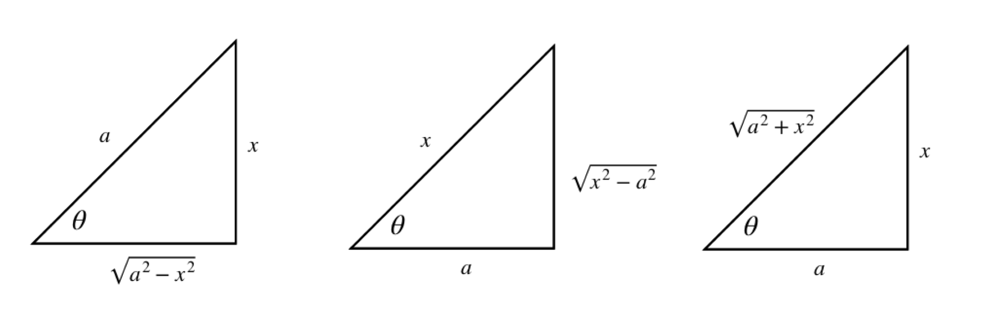
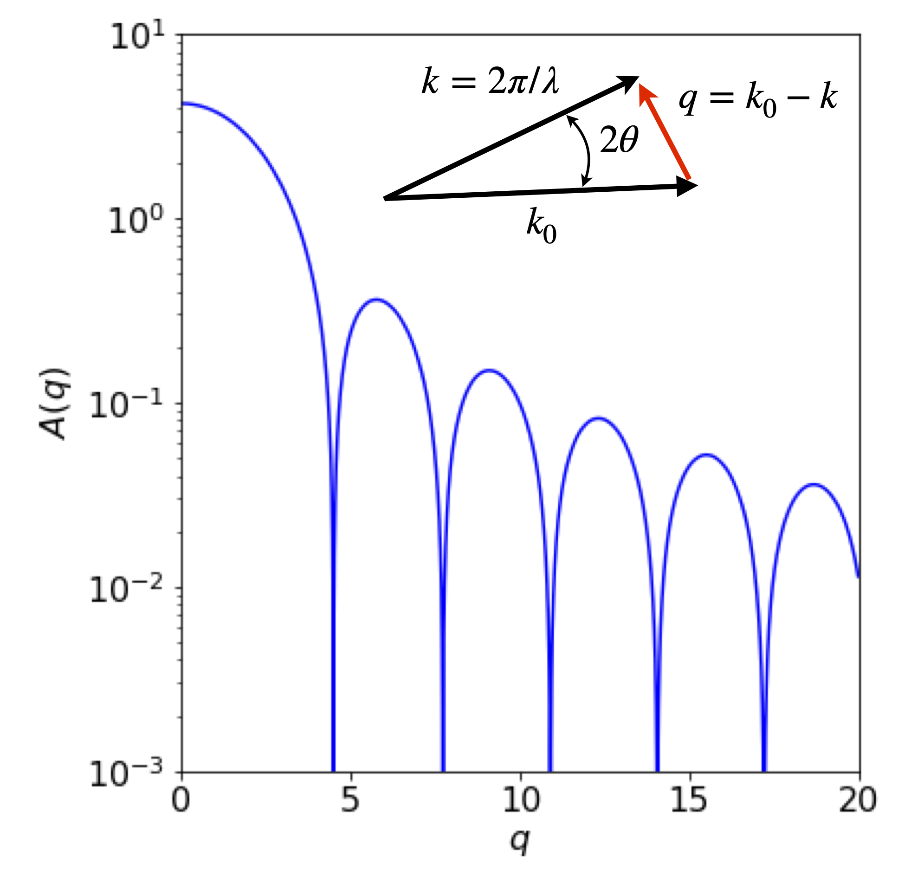

Integration by substitution
Contents
Integration by substitution#
3 Clever substitution can help to solve an integral#
It may appear at first that if an integral is not in a standard form then it cannot be solved - not so! The purpose of substitution is to convert the integral into a standard and therefore simpler form whose solution is known. Choosing a substitution is rather an art and some trial and error is usually required. However, just as in football, a clever substitution can produce the required result.
There are three parts to the method, which will be illustrated with \(\displaystyle\int \sin^2(x)\cos(x)dx\).
\(\quad\)(1) Change a complex expression in \(x\) into a simpler one in another variable \(u\) by a substitution,
\(\qquad\) For example, \(\sin^2(x)\cos(x)\) is simplified with \(u = \cos(x)\) to \((1 - u^2)u\).
\(\quad\)(2) Workout \(dx\) as an expression in \(du\). In our example, \(du=-\sin(x)dx\).
\(\quad\)(3) Change all limits to the new variable.
The usage of \(du\) and \(dx\) as independent entities in themselves in step (2) appears to be different to that of \(du/dx\), which has previously been used as a ratio. However, it is quite permissible to use \(du\) and \(dx\) and so forth on their own, provided their ratio could still be made by rearranging the equation.
As a rule of thumb with complicated sine and cosine expressions, try sine and cosine substitutions. If you are lucky, your first guess may be the correct one; if not, try again.
Start by guessing that the substitution \(u = \cos(x)\) might work, therefore \(\displaystyle \frac{du}{dx}=-\sin(x)\) or \(dx=-du/\sin(x)\). Next substituting for \(\cos(x)\) and \(dx\) gives
and in the last step \(\cos^2(x) + \sin^2(x) = 1\) was used. Notice that no integration has yet been performed, just the substitutions. However, this last integral looks as if it might be possible but it is still a bit complicated, so instead of persevering it is easier to try again and see if a better result is possible. You can always return to this result if necessary. As a second try, substitute \(u = \sin(x)\) and then \(du = \cos(x)dx\) and this turns out to be far simpler:
Using the right-angled triangle it is possible to substitute trigonometric functions for algebraic ones and vice versa. The triangles and their corresponding trig relationships are shown in table 1.
Consider the integral \(\displaystyle \int \frac{x^2}{\sqrt{4-x^2}}dx\). The substitution \(\tan(\theta)=x/\sqrt{a^2-x^2}\) with \(a=2\) is appealing. However, when differentiated to substitute \(d\theta\) for \(dx\) it produces a horrible result. Trying \(\cos(\theta)=\sqrt{ 2^2-x^2}/2\) instead proves to be a good starting place because when differentiated \(d\theta\) produces a reciprocal square root that cancels with that in the integral. Differentiating gives \(2\sin(\theta)d\theta = x/\sqrt{4 - x^2}dx\) changing the integral into
This is now a standard form and can be converted to an exponential form (or looked up in Section 4.2.13) and then converted back to \(x\) using trig functions.
Table 1 Trig. formulas#

3.1 Definite integrals with substitution#
When calculating a definite integral first evaluate the indefinite integral and then using the limits, work out the final value. If a substitution is made it is also necessary to change the limits, thus making it unnecessary to reverse the substitution to obtain the result.
Suppose the integral is \(\displaystyle \int_2^8 \frac{3}{(1+2x)^3}dx\), trying the substitution \(u = 1 + 2x\) seems an obvious choice and therefore \(dx = du/2\). The limits are \(x = 2\) and 8, which become \(u = 5\) and \(17\) in the new variable, making the integral
Alternatively, calculate the integral leaving out the limits to begin with, then convert back to \(x\) and then use the original limits;
4 Three useful results with a function and its derivative#
Integrals where the function in the numerator is the derivative of the function in the denominator, evaluate to logs. For example,
where \(f'(x)\) is the derivative of \(f\) and \(c\) is the constant of integration. The symbols \(| \;|\) indicate that the absolute value of the function must be taken because the log of a negative number is not permissible.
This result can be demonstrated by substitution of \(u = f(x)\) then \(du = f '(x)dx\) into equation 12 giving
and this result is not surprising when recalling the differential of \(\ln( f (x))\). A second example is
The cosine is the derivative of the sine, and the absolute value is taken because the sine is negative for some values of \(x\).
Related to equation 12 is the integral
and this can be verified by letting \(f (x) = u\) and differentiating \(f (x) + c\). Try this and then integrate both sides of the equation.
The third equation involves a function and its derivative and is the product,
Notice that the function is written first, for example,
where the function is \(\cos(x)\). Of course, the integral in this particular case could have been written the other way round. The result would then be \(\displaystyle \int\sin(x)\cos(x)dx=-\frac{1}{2}\sin^2(x) +c\) but because \(\cos^2(x)+\sin^2(x)=1\) this is the same result if the \(1\) is added to the arbitrary constant \(c\).
5 Integration by parts#
Very often the products of two functions must be integrated and one way of doing this is to use ‘integration by parts’. Integration by parts is a major tool to integrate seemingly difficult expressions.
In differentiating products of functions (Chapter 3.5.1), such as \(u\) and \(v\) where each is itself a function of \(x\), we used the equation,
Integrating this equation gives
and rearranging gives
which is the integration by parts formula. This reads:
\(\quad\) The integral of \(udv\) is \(u\) times the integral of \(dv\), which is \(v\) minus the integral of \(v\) times the derivative of \(u\).
The trick is to find \(u\) that can be differentiated, which is usually easy, and \(v\) that can be integrated, which is sometimes much harder. It is worth exchanging \(u\) and \(v\) if the resulting integration gets more complicated.
A few examples should make this important method clearer.
(i) \(\displaystyle \int y\cos(y)dy\)#
To solve \(\displaystyle \int y\cos(y)dy\) using equation 16
(i) Start by trying \(u=y\) and \(dv=\cos(y)dy\)
(ii) To find \(uv\), integrate \(v=\cos(y)dy\) to \(v=\sin(y)\) and then multiply this by \(u\equiv y\).
(iii) Form the \(vdu\) integral by differentiating \(u\) giving \(du\equiv dy=1 \) and multiply by \(v=\sin(y)\) to give \(\int vdu =\int \sin( y)dy\).
(iv) Combining these terms gives
(ii) \(\int x\ln(x)dx\)#
The integral \(\int x\ln(x)dx\) can be evaluated by parts if \(u=\ln(x)\) and \(dv=xdx\), producing
with \(c\) as the integration constant. Trying this integral the other way round with \(u = x\), and \(dv = \ln(x)dx\) is more difficult because to obtain t we have to know the integral of \(\ln(x)\). This can be looked up and is \(x\ln(x) - x\), and has to be integrated again in the next step.
What has happened here is that the original integral is produced on the right, making the method recursive in this instance. Rearranging gives
which is the same result as by the first method when both sides are divided by two.
(iii) \(\int e^x\sin(x)dx\)#
Sometimes successive integration is necessary, as with \(\int e^x\sin(x)dx\). To integrate this function let \(u = e^x\) and \(dv = \sin(x)dx\). This produces
It is then necessary to perform the right-hand integration in a similar way, giving
By substituting this into the first result gives
which, after rearranging, is
As a check, differentiate the result. Notice that the integral could more easily be solved by converting the sine to its exponential form. It is often, but not always the case, that more than one method could be used to solve an integral. Which you choose depends on your particular liking for one method over another.
5.1 Small angle x-ray scattering: SAXS#
A real example of integration by parts can be found when determining the scattering of x-rays by a molecule. In the technique of small angle scattering called SAXS the scattering is determined by the overall ‘shape’ of the electron distribution \(\rho(r)\) at some point \(r\) in a molecule and the wavevector \(q\) of the scattering.
The equation governing the scattering is
In the simplest case of a hard sphere potential \(\rho\) has the value \(1\) up to a distance \(R\) and above this it is zero. This changes the equation into
and the integration can be done by parts. Choosing \(dv=rdr\) does not simplify the resulting equations so we can choose \(dv=\sin(qr)dr\). This produces the form
making
Only the absolute value of the scattering is measured in an experiment: negative numbers of photons do not make any sense. The zeros correspond to destructive interference between the incoming and scattered waves.

Figure 7a. Calculated scattering profile as might be measure in a SAXS experiment with a square potential. The inset shows the vectors describing the incoming x-ray \(k_0\) and the scattered ray \(k\) with the wavevector \(q\).